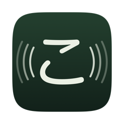
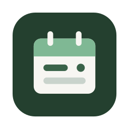
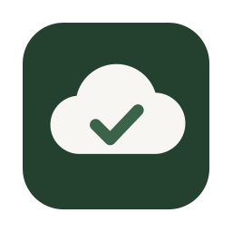

macOS applications

Kodama
A web radio streaming application for the menu bar. It plays your stations, records the tracks they broadcast, and lets you choose which ones to keep.
macOS 14+ · free
Kumoji
A menu bar app for mounting your rclone remotes. Supports encrypted configurations, with the password kept behind TouchID. Requires rclone and an existing rclone configuration.
macOS 13+ · freeOmarchy plugins
Widgets for the bar of Omarchy, the Linux desktop built on Arch and Hyprland. They follow Omarchy's theme and language, in English as well as French.

Agenda
Your next meeting next to the clock and, in one click, the agenda of the coming days, with a button to join Teams, Zoom or Meet. Reads the ICS link published by Outlook / Microsoft 365, Google or iCloud, without signing in: paste it in the settings screen, which also sets how many days are shown.
Omarchy · free
rclone mounter
Kumoji's Linux counterpart: your rclone remotes, one switch each, mounted with a full cache, for streaming or read-only. Supports encrypted configurations, with the password kept in the keyring.
Omarchy · free
Obsidian Tasks
Your Obsidian tasks in the bar: the most urgent one due today sits next to the clock and, in one click, the list to check off, change a status or add a task without opening Obsidian. Follows the Tasks plugin format, with a settings screen to pick the notes to follow.
Omarchy · freeInstalling a plugin takes one command:
omarchy plugin add https://github.com/snouhaud/omarchy-agenda.git --enable
omarchy plugin add https://github.com/snouhaud/rclone-mounter.git --enable
omarchy plugin add https://github.com/snouhaud/obsidian-tasks.git --enable